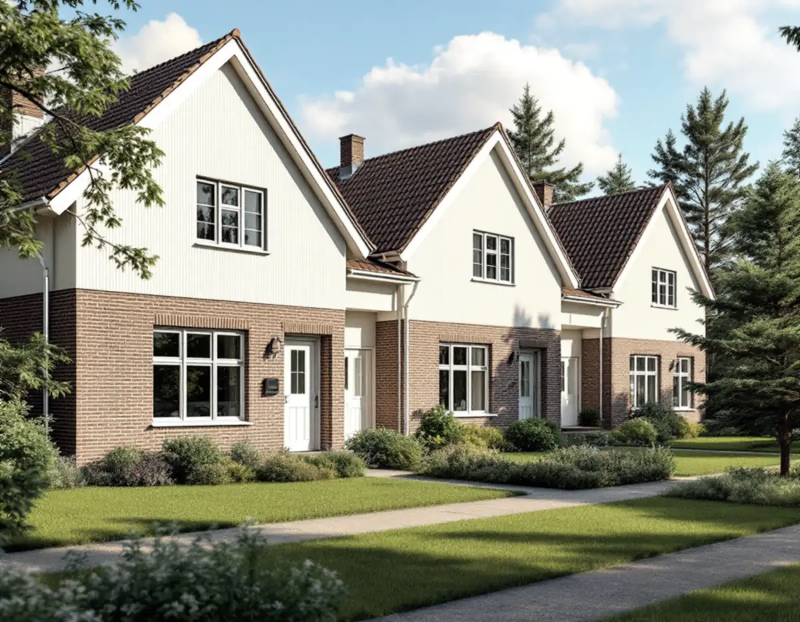
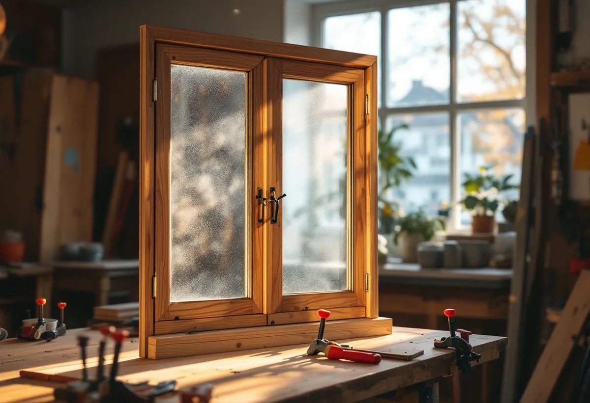
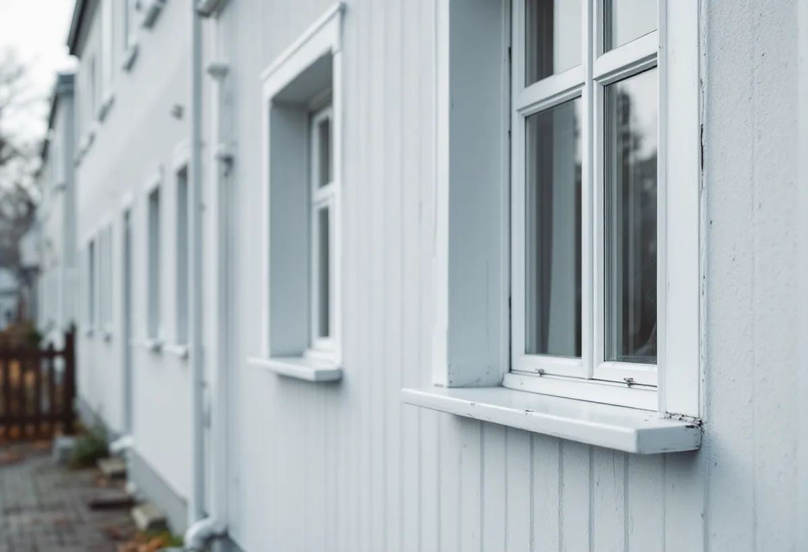

Ägarform
Vi reder ut om du eller föreningen ansvarar för fönstren.
Radhusen och kedjehusen runt Vällingby centrum har ofta en regelbunden fönstersättning som är lika i hela gruppen, och därför är det värt att behålla fönstren. Geal Entreprenad AB renoverar fönster i radhus, kedjehus och villor i Vällingby, Råcksta och Kälvesta och reder ut vem som ansvarar för vad.

Vällingby invigdes 1954 som den första tunnelbanestaden, och runt centrum placerades bostäder i fallande skala med radhus och kedjehus längst ut. Stadens strategi för småhusområden beskriver flera mycket väl gestaltade radhus- och villaområden, till exempel de kulturhistoriskt synnerligen värdefulla Atlantis och Omega. Vällingby–Råcksta är riksintresse för kulturmiljövården.
Strategin beskriver kedjehusen i Vällingby som moderna byggnadsvolymer med asymmetriska gavlar och en mer traditionell fasadutformning, med regelbunden fönstersättning och material som tegel och puts.

För de gruppbyggda småhusområdena räknar strategin enhetligt utformade husgrupper och tidstypisk färgsättning till karaktärsdragen, och den råder att karaktärsskapande material, byggnadsdelar och detaljer tas tillvara vid renoveringar. Ett nytt fönster med annan indelning eller grövre profiler syns i hela längan.
Stockholms stad räknar ändrade profiler, ny indelning, ny upphängning och ny kulör till de fönsterändringar som kan kräva bygglov, och inom riksintresset krävs lov även för åtgärder som annars är lovfria. En renovering som behåller fönstrets utseende är underhåll.
Enligt stadens områdesfakta för 2025 finns 228 småhus med bostadsrätt och 220 med äganderätt i stadsdelen Vällingby. I Kälvesta är nästan alla de 1 492 småhusen äganderätter, och där beställer ägaren själv. Stadens strategi beskriver Kälvestas radhus och kedjehus med liggande träpanel och sadeltak.
Bor du i ett radhus med bostadsrätt avgör föreningens stadgar vem som ansvarar för fönstren. Bostadsrättslagen utgår från att du håller lägenheten i gott skick, om inte stadgarna bestämmer annat. Det påverkar både vem som beställer och vilket rotavdrag som gäller.
Riksantikvarieämbetet beskriver hur de spröjsade bågarna försvann på 1930-talet och fönsterbågen fick en enda hel glasruta, och hur limmet samtidigt infördes i fönsterkonstruktionerna. Fönster från tiden efter 1930-talet har därför ofta en hel ruta i varje båge och limmade fogar.
Limmade bågar lagas genom att nytt virke skarvas in i den skadade delen. Det är framför allt bottenstyckena i karm och båge som drabbas, och för karmen räcker det i allmänhet att limma in nytt virke i den yttre, mest utsatta delen. Om fasaderna i stadsdelen kan du läsa under fasadrenovering i Vällingby.
Riksantikvarieämbetet rekommenderar linoljefärg och linoljekitt vid renovering av träfönster, och tre strykningar: grundning, mellanstrykning och slutstrykning. Tätningslister på innerbågen förbättrar både ljud- och värmeisolering, och fönstret ska målas och justeras innan listerna sätts.
Går bågarna trögt eller sluter dåligt kan det behövas nya handtag och stängningsbeslag, och gångjärnen justeras så att bågen sluter tätt mot karmen innan listen sätts. Med dagens metoder kan målningen också göras i verkstad, så att fönstren kan renoveras även på vintern.
Ska flera hus i längan renoveras samtidigt kan arbetet samordnas, så att fönstren får samma kulör och samma utförande. Om fönsterbyte i stort kan du läsa under fönsterbyte.

Vi reder ut om du eller föreningen ansvarar för fönstren.
Varje fönster gås igenom: virke, kitt, färg och beslag.
Utsida och insida står för sig, så att ROT kan räknas rätt.
Skadade bottenstycken skarvas och kitt läggs om.
Linoljefärg i tre strykningar och tätningslist på innerbågen.
Vi går igenom fönstren och skriver ner kulören.
Skatteverket räknar reparation av fönster och målning av fönster på ett småhus som rotarbete. I en bostadsrätt ger byte eller reparation av fönster inget avdrag, men arbete på fönstrens insida, till exempel innerfönster och fönsterfoder, kan ge avdrag om du ansvarar för det enligt stadgarna.
Avdraget är högst 30 procent av arbetskostnaden, högst 50 000 kronor per person och år och högst 75 000 kronor tillsammans med rutavdrag. Material och resor ger inget avdrag. Geal drar avdraget direkt på fakturan.
Antalet fönster, skadorna i virket, rutornas storlek, om fönstren ska tätas och om flera hus i gruppen renoveras samtidigt. Efter ett gratis platsbesök får du ett skriftligt kostnadsförslag.
Byta eller renovera fönster.
Fönsterbyte i Stockholm →Takbyte, takbesiktning och plåtarbeten.
Takläggare i Vällingby →Riksintresset och villaområdena.
Attefallshus i Vällingby →Riksintresset, radhusen och våtzonerna.
Badrumsrenovering i Vällingby →Bygga till i riksintresset.
Byggföretag i Vällingby →Puts från 1950-talet och kulör i riksintresset.
Fasadmålning i Vällingby →Tegel, puts och skivor på tunnelbanestadens hus.
Fasadrenovering i Vällingby →Gamla mattor, lim och asbest.
Golvläggare i Vällingby →Radhus och lägenheter i ABC-staden.
Målare i Vällingby →Takplåt, rännor och beslag i riksintresset.
Plåtslagare i Vällingby →Entréer, dörrar och räcken på radhusen.
Snickare i Vällingby →Kälvesta och husgrupperna.
Takbyte i Vällingby →